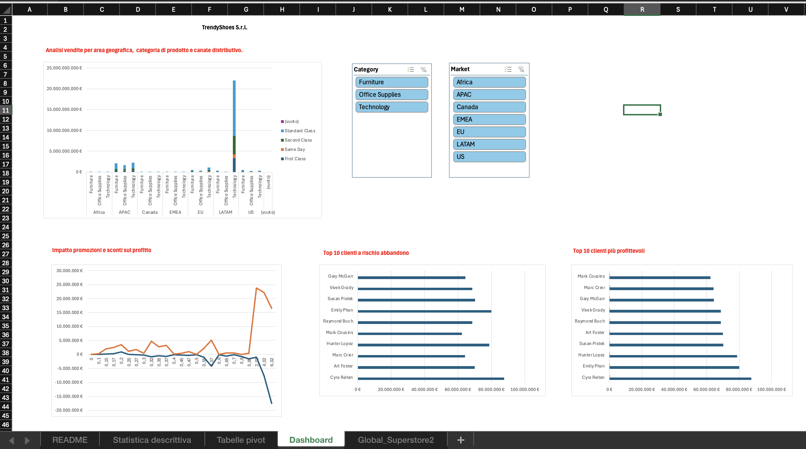

📌 Panoramica del Progetto
Progetto realizzato durante il Master in Data Analytics di ProfessionAI, come capstone del modulo su Excel avanzato e Power Query. Lo scenario di business — una catena retail/e-commerce di calzature che vuole passare a un approccio data-driven — è uno scenario simulato ideato per applicare le tecniche in un contesto realistico.
Il progetto costruisce un sistema di Business Intelligence su Microsoft Excel basato sul dataset pubblico Global Superstore, con l'obiettivo di ottimizzare le vendite, i margini sulle promozioni e l'analisi dei trend stagionali.
Dataset: Global Superstore (dataset pubblico ampiamente usato per esercitazioni di BI)
📊 Executive Dashboard Preview

(Figura 1: Report visivo interattivo con KPI di sintesi, analisi delle vendite per area e filtri temporali)💡 Cosa dimostra questo progetto
- Ottimizzazione promozioni & margini: analisi dell'impatto degli sconti sui profitti effettivi, per identificare i prodotti ad alta marginalità e ridurre le promozioni infruttuose.
- Pianificazione scorte & stagionalità: calcolo di medie mobili e tassi di crescita mensili per prevedere i picchi di domanda e ottimizzare il riassortimento.
- Data-driven decision making: dashboard interattiva con filtri visivi per decisioni rapide per regione e categoria.
🛠️ Architettura del Modello Excel
Il modello è organizzato nei seguenti tab:
Statistica descrittiva: calcolo di medie mobili (3 e 6 mesi), tassi di crescita (MoM/YoY), deviazione standard e indici di stagionalità.Tabelle pivot: aggregazioni dinamiche di fatturato e profitti per area geografica, categoria prodotto e canale distributivo.Dashboard: report visivo con KPI principali (fatturato, profitto netto, margine %), grafici dinamici e slicer interattivi.